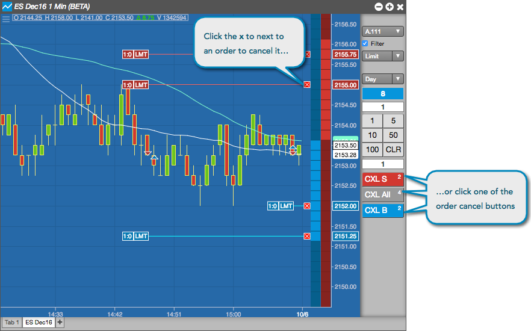

To cancel a working order at a specific price level, click the x next to the working order at the desired price. To delete multiple orders, click one of the CXL buttons in the order pane in the chart:
- CXL S — Cancels all working sell orders for the selected instrument. The number of working sell orders is listed on this button.
- CXL All — Cancels all working orders for the selected instrument. The total number of working orders is listed on this button.
- CXL B — Cancels all working buy orders for the selected instrument. The number of working buy orders is listed on this button.
Note: If you are filtering per account, only orders for that account will be canceled.
